В этой статье будет рассказано о том, как добавить в редактор CadEditor настройки (конфиг) для открытия и редактирования новой игры с нуля, на примере игры Teenage Mutant Ninja Turtles 2 [NES].
Как будет показано в статье, другие игры с похожим форматом, добавляются очень похоже, так что материал подходит для разных игр (список будет приведён ниже).
Задача добавления состоит из двух частей:
1. Разбор формата данных уровней игры.
Необходимо понять, как именно строится уровень в игре, и получить адреса данных, которые потребуются для её редактирования.
2. Написание файла настроек (конфига) для редактора
В этом файле необходимо указать найденные адреса и способ загрузки данных, понятный для редактора.
Итак, начнём.
Разбор формата данных уровней игры
Инструменты
Для определения формата данных методами, описанными в статье, нам понадобятся:- ROM-файл Teenage Mutant Ninja Turtles II - The Arcade Game (U) [!].nes, другие региональные версии тоже подойдут, но адреса могут слегка отличаться.
- Эмулятор FCEUX свежей версии.
- Программа поиска блоков NesBlockFinder. Для её работы надо установить интерпретатор языка Python. После его установки можно будет запускать py-файлы двойным щелчком мышки, как обычные программы.
- Тайловый редактор Tile Layer Pro. С помощью него можно определить номер и адрес в ROM-файле CHR-банка графики.
Шаг 1. Получаем дамп видеопамяти
Открываем в эмуляторе ROM-файл и запускаем уровень, который хотим добавить в редактор: 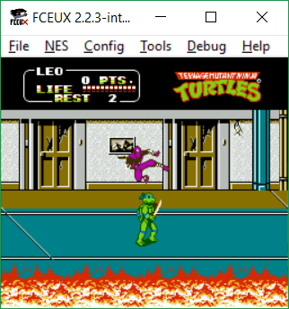Теперь необходимо сделать дамп видеопамяти, он потребуется для поиска блоков в программе NesBlockFinder. В меню эмулятора выбираем Debug->Hex Editor, и в появившемся окне в меню выбираем File->Dump to file->PPU Memory, сохраняем дамп памяти в файл с именем по умолчанию: 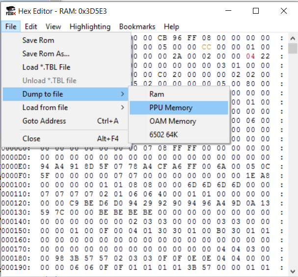
Шаг 2. Находим блоки в программе NesBlockFinder
Запускаем скачанную программу NesBlockFinder.py, указываем для неё ROM-файл и сохранённый дамп памяти, после чего нажимаем кнопку Run: 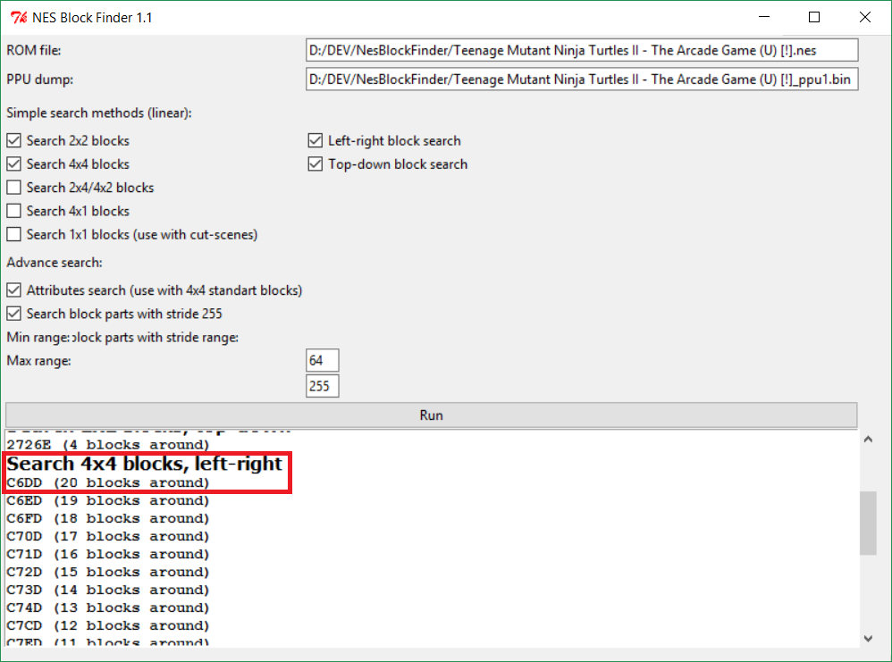Далее изучаем результаты поиска блоков разных типов. В основном находится один и тот же массив адресов, какой бы тип блоков ни был выбран, в этом состоит интересная особенность программы – она умеет находить блоки даже тех типов, для которых изначально не предназначалась. На скриншоте красным прямоугольником выделен найденный программой адрес (0xC6DD), который предстоит проверить в эмуляторе.
Шаг 3. Уточняем тип блоков и адрес начала массива
Снова возвращаемся к работе с эмулятором, в открытом окне Hex Editor переключаемся на просмотр исходного ROM-файла (в меню View->Rom File) и переходим на найденный адрес (меню File->Goto Address и вбить адрес 0xC6DD). Для проверки заменяем байты, начиная с этого адреса, на какие-нибудь случайные: 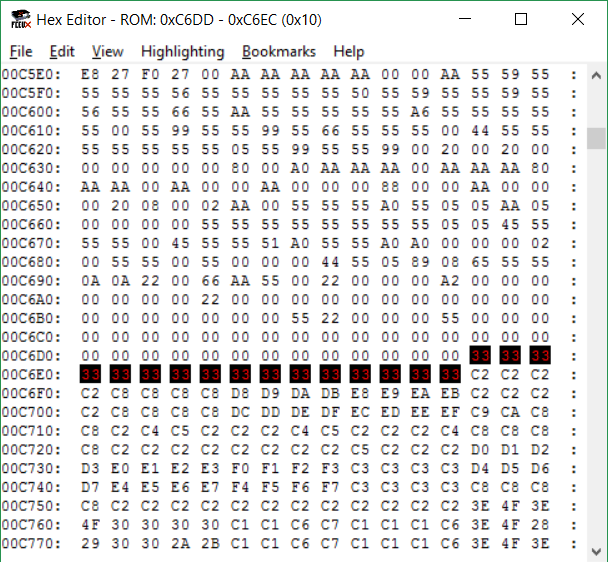Теперь перезапустим игру (в меню эмулятора NES->Reset, нужно именно перезапустить игру, а не открыть ROM заново, иначе изменения, сделанные в Hex-редакторе, затрутся), и снова загрузить уровень, чтобы проверить результат внесённых изменений. Если всё было сделано правильно, вы увидите на экране: 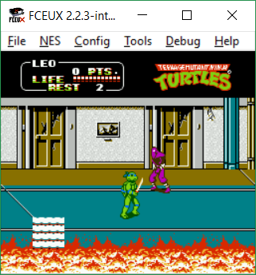
Результат получился идеальным – сразу же удалось обнаружить, что 16 изменённых байт описывают блок размером 4x4 тайла на экране. Иногда может получиться, что по изменениям на экране не сразу понятен тип блоков, тогда следует вернуться на экран Hex Editor, там отменить внесённые изменения (нажимая Ctrl+Z), и пробовать менять на несколько байт больше или меньше. Подробнее про нестандартные случаи будет рассказано в одной из следующих статей.
Ну а в нашем случае осталось только уточнить некоторые дополнительные данные.
Во-первых - программа NesBlockFinder находит только те блоки, которые находятся на экране, а для редактора нам надо знать начало массива описания блоков, даже если первых блоков из массива нету на экране. Чтобы узнать о них, можно применить несколько различных техник. Для первого примера можно просто воспользоваться небольшой хитростью. Очень часто разработчики делают первый блок состоящим из одних нулей - обычно это чисто чёрный неиспользуемый при построении уровня тайл. Его легко найти - посмотрите снова на скриншот окна Hex Editor измененными байтами и обратите внимание, что перед изменёнными данными как раз идёт последовательность из нулей - последние 16 нулей в ней и есть описание первого блока.
Это работает для многих игр - берётся адрес, найденный с помощью NesBlockFinder, и дальше память просто просматривается вверх до тех пор, пока не будет найден такой нулевой блок. Таким образом, итоговый адрес начала массива блоков 0xC6CD. Эта информация пригодится нам для составления файла конфига, однако необходимо собрать ещё немного данных.
Шаг 4. Нахождение атрибутов блоков
Номера тайлов блоков, которые мы нашли, не полностью задают цвет блока, графика на NES устроена так, что на каждые 4 тайла необходимо задать ещё 2 общие для этих тайлов бита, уточняющие индекс в палитре. Таким образом, для блока размером 16 тайлов необходимо задать 8 бит (1 байт) индексов в палитре. Пример того, как биты палитры "докрашивают" блок, состоящий из тайлов с номерами от 0 до F: 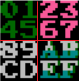Первые два биты кодируют цвет тайлов 0,1,4,5, следующие - тайлов 2,3,6,7, следующие - 8,9,C,D, последние 2 бита - для цвета тайлов A,B,E,F.
Эти атрибуты блоков могут кодироваться разными способами, но чаще всего хранятся отдельным массивом либо сразу перед массивом описания блоков, либо сразу после него. Действительно, для TMNT 2 нашлись данные об атрибутах перед началом массива данных о блоках: 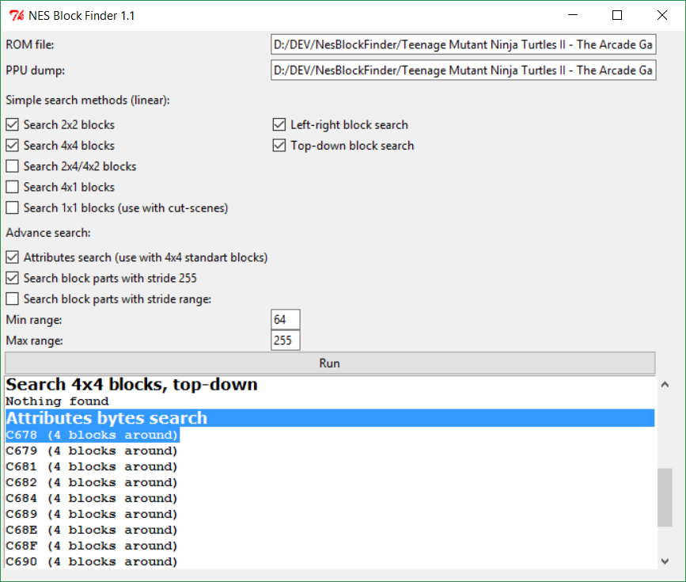
После небольшой серии экспериментов в Hex Editor'е можно подобрать адрес начала массива атрибутов, и его размер: 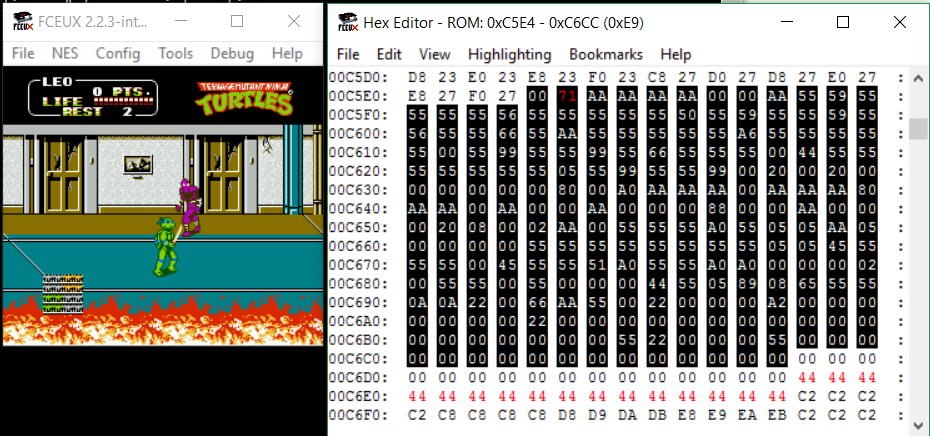
На этом скриншоте выделен весь найденный массив и в нём изменён один байт 0xC5E5, отвечающий за тот блок, который мы изменили ранее. Значение 0x71 подобрано так, чтобы все 4 пары бит в нём были разные (11 10 00 01) - результат этого виден в окне эмулятора, каждая квадранта блока открашен в разные цвета, хотя весь блок состоит из 16 одинаковых тайлов.
Запоминаем адрес начала массива атрибутов (0xC5E4) и его размер (233 блока) и переходим к следующему шагу.
Шаг 5. Нахождение описания экранов
Кроме описания самих блоков необходимо найти также и описание целого игрового экрана, с помощью индексов этих блоков. Специально для игр с блоками 4x4 вместе с NesBlockFinder идёт программа NesScreenFinder.py. Запускаем её, аналогично шагу 2 указываем путь к ROM-файлу и дампу памяти, и дополнительно указываем адрес начала массива блоков. После чего жмём кнопку Run и радуемся результату: 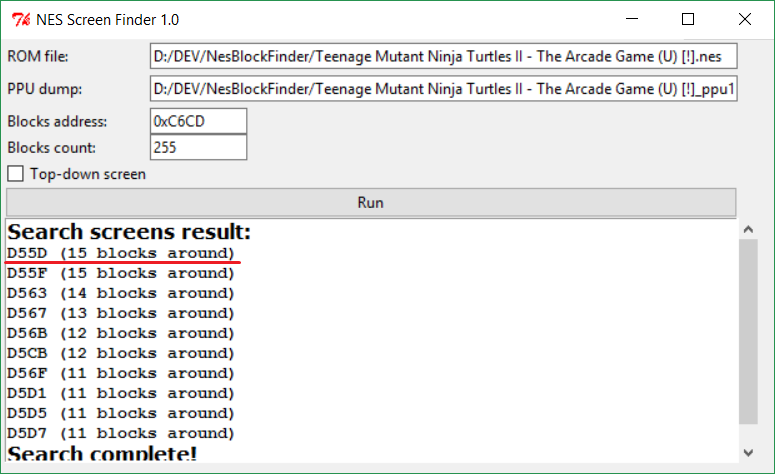Проверяем результат корраптом байт в Hex Editor: 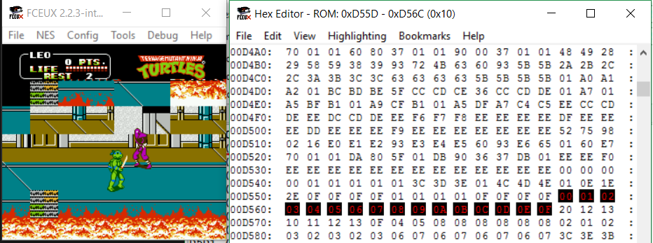
Всё точно – изменение одного байта меняет на экране целый блок 4x4! Записываем адрес начала описаний экранов (0xD55D), а также размеры одного игрового экрана – 8 байт в ширину и 6 в высоту.
Шаг 6. Нахождение адреса банка видеопамяти и палитры уровня
Последнее, что осталось найти – банк памяти и палитру, с помощью которых игра отрисовывает блоки и экраны. Открываем окно просмотра PPU в эмуляторе (меню Debug->PPU Viewer) и подбираем значение Display on Scanline в диапазоне от 0 до 240 так, чтобы в окне просмотра отобразился именно тот банк, с помощью которого отрисован уровень: 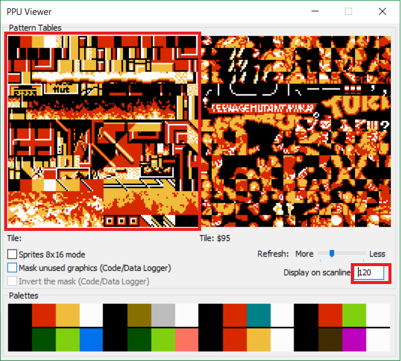Далее открываем ROM-файл с игрой в программе Tile Layer Pro и в ней просто пролистываем банки до тех пор, пока не найдётся нужный: 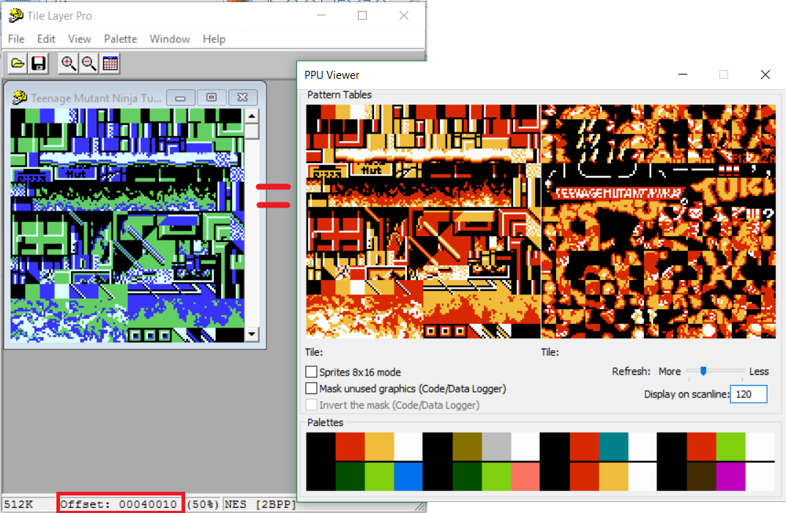
В данном конкретном случае даже листать не пришлось, первый уровень использует первый же банк графики, его адрес в ROM (0x40010) выделен на скриншоте. Такой метод поиска адресов CHR-банков работает не для всех игр, иногда требуются дополнительные усилия для получения искомого адреса, либо же банк не хранится целиком в ROM и необходимо распаковывать его или брать готовый дамп из видеопамяти, но эти методы выходят за рамки первой учебной статьи.
Последнее, что необходимо получить – палитру уровня. Это также несложно - в окне PPU Viewer мышкой можно навести на цвет палитры и посмотреть номер этого цвета. Записываем все 16 номеров и переходим в окно Hex Editor. В нём переходим в меню, выбираем Edit и ищем в ROM-файле записанные номера: 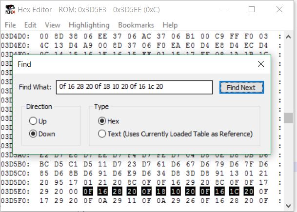
Как видно из скриншота, адрес палитры в ROM – 0x3D5E3. Поздравляю, теперь мы собрали все необходимые данные для добавления игры в редактор.
Составление файла конфига для добавления игры в редактор CadEditor
Конфигурационный файл для добавления в редактор на самом деле представляет собой обычный файл на языке C#, в котором описаны функции, загружающие необходимые данные в редактор. Большая часть функций работает одинаково для многих игр, поэтому библиотека редактора уже содержит все готовые функции, так что нам не нужно будет писать свои, а лишь правильно указать их названия. В этой статье я просто приведу пример готового конфига с небольшими комментариями, куда будут вставлены найденные нами в первой части статьи адреса. Для большей части игр с похожим устройством конфиги будут отличаться только лишь другими адресами, остальная часть останется неизменной. Вот всё содержимое файла конфига для уровня 1 игры Teenage Mutant Ninja Turtles 2:
Settings_Tmnt2-1
Разберём все значащие строчки:
//здесь указывается адрес начала описания экранов, //общее количество экранов на уровне, //а также высота и ширина одного экрана public OffsetRec getScreensOffset() { return new OffsetRec(0xD55D, 9, 8*6); } public int getScreenWidth() { return 8; } public int getScreenHeight() { return 6; }
//указываем, что экран состоит из обычных блоков, без макроблоков //(это пока неважно) public bool isBuildScreenFromSmallBlocks() { return true; }
//Здесь указана стандартная функция загрузки видеобанка, //а также указан найденный адрес видеобанка public GetVideoPageAddrFunc getVideoPageAddrFunc() { return Utils.getChrAddress; } public GetVideoChunkFunc getVideoChunkFunc() { return Utils.getVideoChunk; } public SetVideoChunkFunc setVideoChunkFunc() { return Utils.setVideoChunk; } public OffsetRec getVideoOffset() { return new OffsetRec(0x40010, 4 , 0x1000); }
//Аналогично, адрес палитры и способ её загрузки public GetPalFunc getPalFunc() { return Utils.getPalleteLinear;} public SetPalFunc setPalFunc() { return Utils.setPalleteLinear;} public OffsetRec getPalOffset() { return new OffsetRec(0x3d5e3, 1, 16); }
//наконец, указываем адреса блоков, //их количество, //а также адрес массива атрибутов public OffsetRec getBlocksOffset() { return new OffsetRec(0xC6CD , 1 , 0x1000); } public int getBlocksCount() { return 233; } public int getPalBytesAddr() { return 0xC5E4; } //и говорим редактору, о том, какие именно это блоки: //getBlocksFromTiles16Pal1 - это //стандартная функция для блоков 4x4 и байтом атрибутов //она встречается в большом количестве игр public GetBlocksFunc getBlocksFunc() { return Utils.getBlocksFromTiles16Pal1;} public SetBlocksFunc setBlocksFunc() { return Utils.setBlocksFromTiles16Pal1;}
Вот и всё. Данный конфиг можно загрузить в редактор CadEditor и отредактировать уровень. 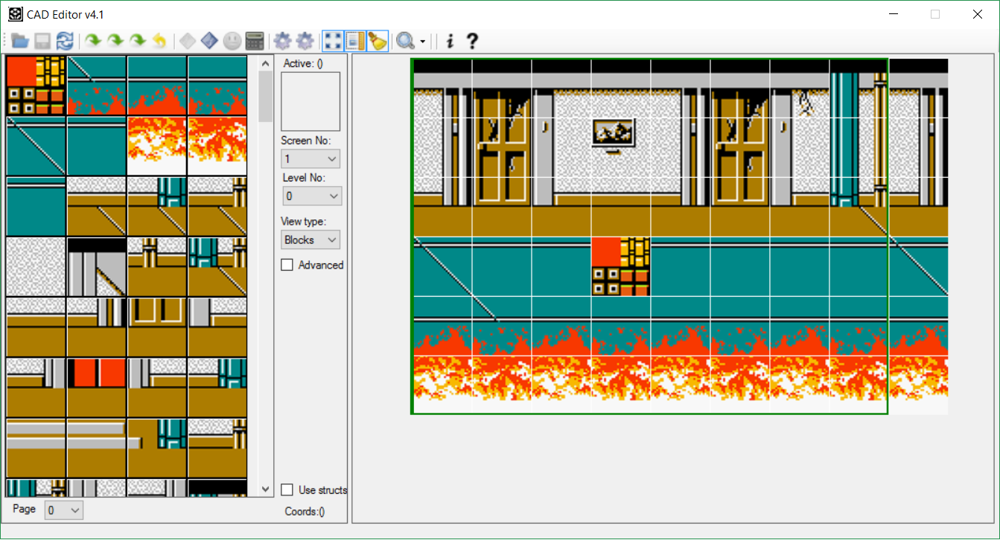
А потом посмотреть на него в эмуляторе: 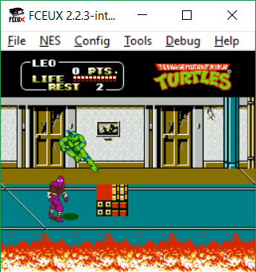
Игры с таким же форматом блоков
Собственно, описанный в статье формат блоков хорош тем, что встречается в большом количестве игр от разных разработчиков, вот небольшой список проверенных на данный момент:
- Power Blade 1-2 (разработчик Natsume)
- Adventure Island 1-3 (Hudson soft)
- Yo-Noid / Kamen no Ninja (Now production)
- Jackie Chan Action Kung Fu (Now production)
- Contra Force (Konami)
- Batman Returns (Konami)
- Super C (Konami)
- Monster in My Pocket (Konami)
- Bucky O'Hare (Konami)
- Jackal (Konami)
- Teenage Mutant Ninja Turtles 1-3 (Konami)
- Alien 3 (Probe entertaiment)
- Battletoads (Rare)
- Battletoads & Double Dragon (Rare)
- Darkman (Ocean software)
- Zen Intergalactic Ninja
- Wai Wai World
- Splatter House - Wanpaku Graffiti
- Spider-Man - Return of the Sinister Six
- Spartan X 2
- Snake's revenge
- Rush'n Attack
- Rollergames
- Mickey's Safari in Letterland
Пока всё, для первой статьи хватит. 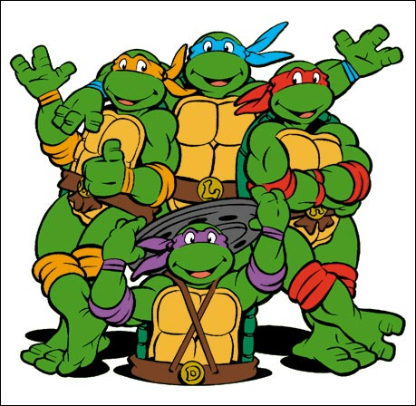